Matiz/Spark | ||||||||
| ||||||||
| . | Definición |
| Tipo de aceite de la caja de cambios | ESSO JWS3314 |
| Capacidad de líquido de la caja de cambios | 4,78 L ( 5,05 qt.) |
| Piñón | Relación |
| Primera | 2.914 |
| Segunda | 1.525 |
| Tercera | 1.000 |
| Cuarta | 0.725 |
| Marcha atrás | 2.642 |
| Aplicación | N•m | Lb-pie | Lb-pulg. |
| Tuerca y tornillo inferior de la caja de cambios | 56-66 | 41-49 | - |
| Tornillos del convertidor de par | 17-20 | 13-15 | - |
| Tornillos de la tapa | 4-7 | - | 35-62 |
| Tornillos del soporte de fijación trasero | 55-65 | 41-48 | - |
| Tornillo y tuerca de conexión de la barra de reacción | 75-85 | 55-63 | - |
| Tornillo y tuerca de la barra de reacción | 75-85 | 55-63 | - |
| Tornillos superiores de la caja de cambios | 56-66 | 41-49 | - |
| Tornillo del cable de conexión a masa | 27-30 | 20-22 | - |
| Tornillos de retención del soporte del manguito inferior | 8-15 | - | 71-133 |
| Tornillo de retención del soporte lateral del alojamiento | 44 | 33 | - |
| Tornillo de retención del soporte lateral de la carcasa | 13 | - | 115 |
| Tapón de drenaje | 40 | 30 | - |
| Tornillos de la tapa lateral al soporte de fijación | 55-65 | 41-48 | - |
| Tuercas de la jaula del soporte de fijación de la caja de cambios | 58-68 | 43-50 | - |
| Tornillo del soporte de fijación de la caja de cambios | 55-65 | 41-48 | - |
| Tuercas de pasacables | 4-7 | - | 35-62 |
| Tuerca de cable | 6-8 | - | 53-71 |
| Tornillos de fijación del conjunto de la palanca de cambio | 4-7 | - | 35-62 |
| Tornillos de fijación del TCM | 6-8 | - | 53-71 |
| Tornillo de la tapa de la bomba de aceite | 9 | - | 80 |
| Vástago del servo de cinta | 3 | - | 27 |
| Tuerca de extremo de anclaje | 32.5 | 24 | - |
| Tornillos de la tapa lateral | 21 | 15 | - |
| Tornillo de bloqueo del eje manual | 7 | - | 62 |
| Tuerca de plato manual | 13 | 10 | - |
| Tornillo del sensor de TFT | 8 | - | 71 |
| Tornillos de instalación del cárter del aceite | 13 | 10 | - |
| Tornillos del actuador de soporte | 27 | 20 | - |
| Tornillo de tope del eje del trinquete de estacionamiento | 5 | - | 44 |
| Tornillos de la bomba de aceite | 13 | 10 | - |
| Tornillos de la campana del convertidor | 31 | 23 | - |
| Tornillo del sensor de velocidad del vehículo | 7 | - | 62 |
| Tornillo del sensor de la turbina | 7 | - | 62 |
| Tornillo del interruptor de gama de transmisión (TR) | 3.2 | - | 28 |
| Tornillo de instalación de refrigerador de aceite | 35 | 26 | - |
| Tornillo de la tapa del respiradero de aire | 12 | - | 106 |
| Tornillo del tubo de llenado de aceite | 7 | - | 62 |
| Tornillo del soporte del cable del selector | 19 | 14 | - |
| Tornillo del soporte del cableado | 44 | 33 | - |
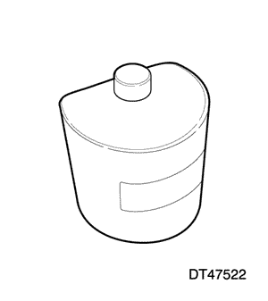  | DT-47522 Fijación de empujador de válvula |
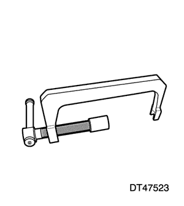  | DT-47523 Empujador de válvula |
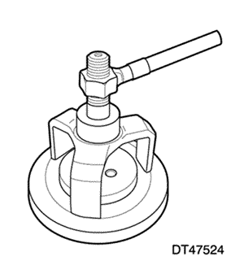  | DT-47524 Compresor de muelles del embrague de baja |
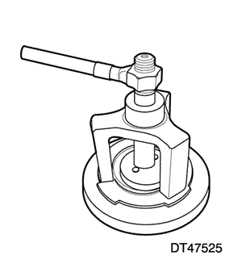  | DT-47525 Compresor de muelles del embrague de marcha atrás |
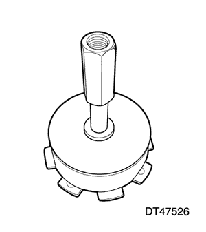  | DT-47526 Compresor de muelles del freno de marcha atrás y baja |
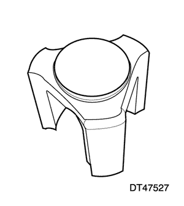  | DT-47527 Compresor de muelles del embrague de alta |
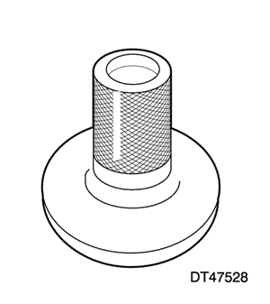  | DT-47528 Instalador del embrague unidireccional de baja |
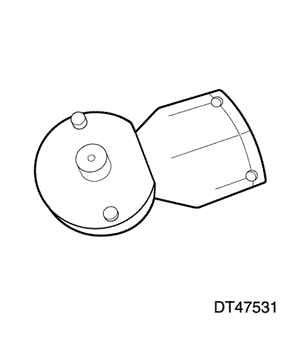  | DT-47531 Soporte del piñón secundario |
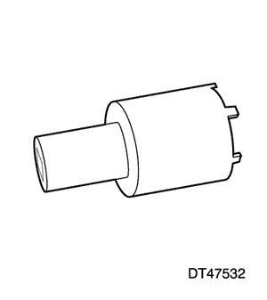  | DT-47532 Extractor/instalador de la contratuerca del piñón secundario |
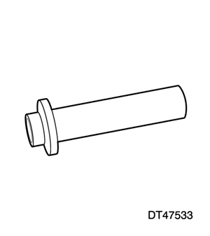  | DT-47533 Instalador del retén de aceite del eje primario |
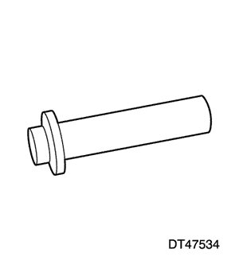  | DT-47534 Instalador del retén de aceite del lado del diferencial (lado del cárter del aceite) |
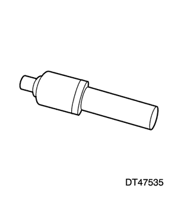  | DT-47535 Instalador del retén de aceite del lado delantero del diferencial |
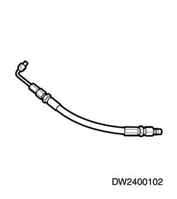  | DW240-010-02 Adaptador del manómetro del aceite |


| © Copyright Chevrolet Europe. Reservados todos los derechos |